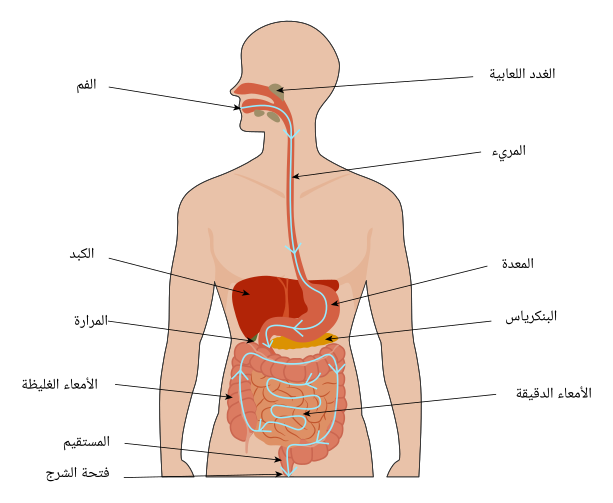

يمتد الجهاز الهضمي من الفم إلى الشرج، ويُعد مسؤولاً عن استقبال الطعام، وتفكيكه إلى عناصره المغذية (بعملية تُدعى الهضم)، وامتصاص تلك العناصر المغذية ونقلها إلى المجرى الدموي، والتخلص من الفضلات والأجزاء غير القابلة للهضم من الجسم.يتألف السبيل الهضمي من: الفم الحلق والمري
